Префектура Окинава · Тятан · шоколад
TIMELESS CHOCOLATE: шоколад из какао и окинавского чёрного сахара
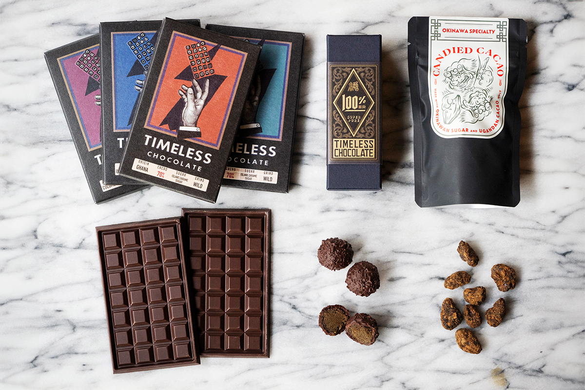
Чёрный сахар на Окинаве варят около 400 лет. В городке Тятан его сделали главным героем шоколада: в плитках TIMELESS CHOCOLATE нет ничего, кроме какао и сахара с островов.
Идея
Сахар, о котором никто не говорил
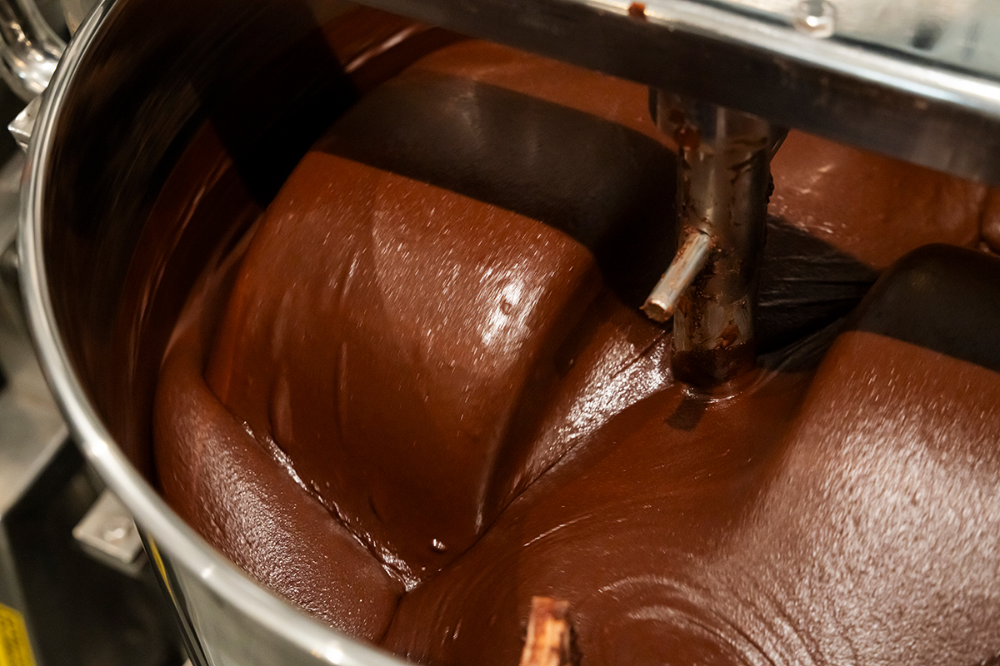
TIMELESS CHOCOLATE находится в Тятане, в центральной части острова Окинава. Мастерская открылась в 2014 году и стала первым на Окинаве магазином в формате bean to bar, где шоколад делают сами, от какао-бобов до готовой плитки.
Всё началось с кофе. Основатель жил в австралийском Мельбурне и увлёкся эспрессо: сначала пьёшь крепкий чистый кофе, потом добавляешь сахар и следишь, как меняется вкус, а затем доводишь чашку до своего идеала. Он заметил странную вещь: о терруаре кофейных зёрен говорили все, а о сахаре никто. Он рассудил, что у сахара тоже должен быть терруар, а на Окинаве, где сахарный тростник остаётся главной культурой, есть целая культура чёрного сахара. Так он решил переехать на Окинаву и искать возможности сахара там.
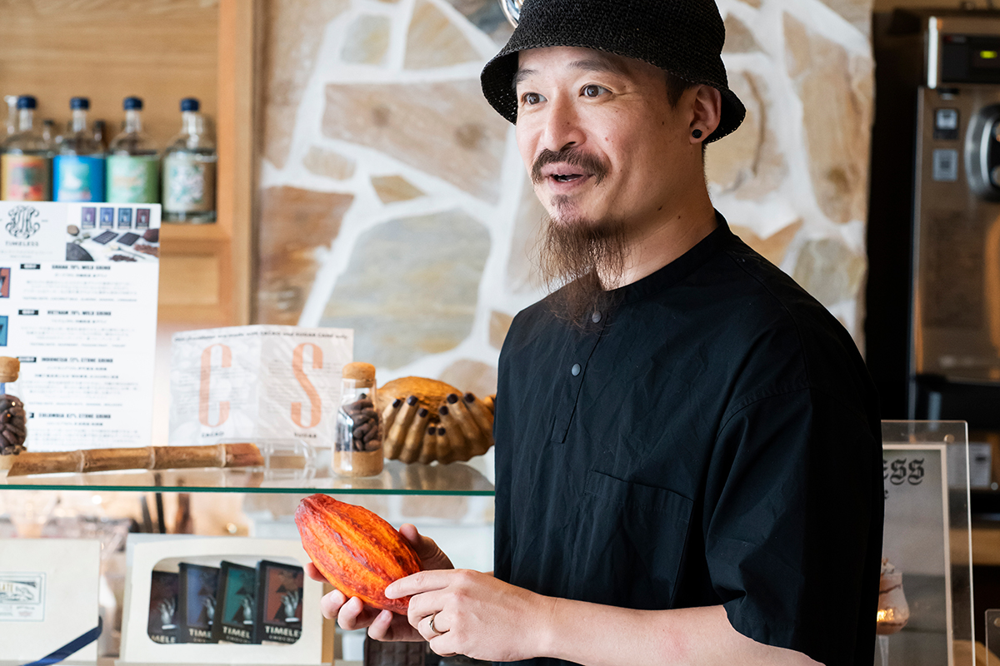
«Если целиться в мировой рынок, обязательно спросят: а земля, на которой растёт тростник, органическая? Было бы здорово, если бы какой-нибудь окинавский остров стал полностью органическим, как Кикай»
основатель TIMELESS CHOCOLATE
Он объехал отдалённые острова в поисках чёрного сахара и обнаружил, что весь он делится на два больших типа. Один напоминает ваниль, сливки и заварной крем, другой отдаёт жжёной горечью и солью. Его поразило, насколько сильно вкус зависит от места. Было это около 2014 года, и тогда на Окинаве ещё никто так глубоко не изучал чёрный сахар и не рассказывал о нём миру.
Процесс
Шоколад, из которого всё лишнее вычтено
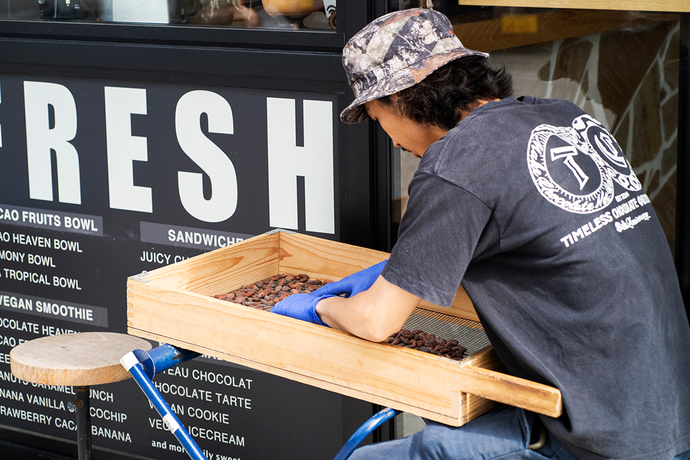
Технология здесь предельно простая. Мастерская закупает качественные какао-бобы со всего мира и обжаривает их сама, прямо в шелухе, подстраиваясь под характер каждого сорта. Пригодились знания, полученные на обжарке кофе: у бобов из разных стран разный вкус, и его нужно раскрыть полностью. Потом шелуху дробят и отделяют от какао-крупки, крупку перетирают в пасту, добавляют чёрный сахар и долго вымешивают. После темперирования шоколад разливают по формам.
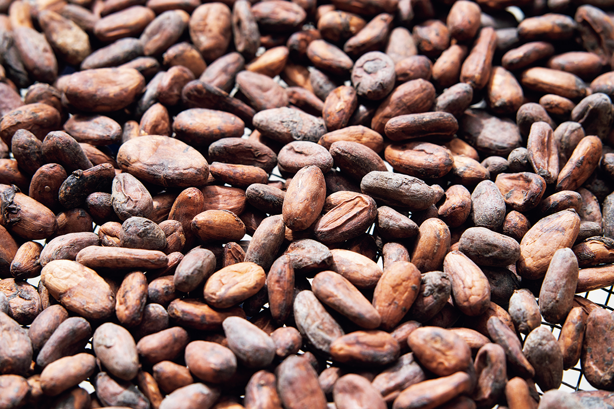
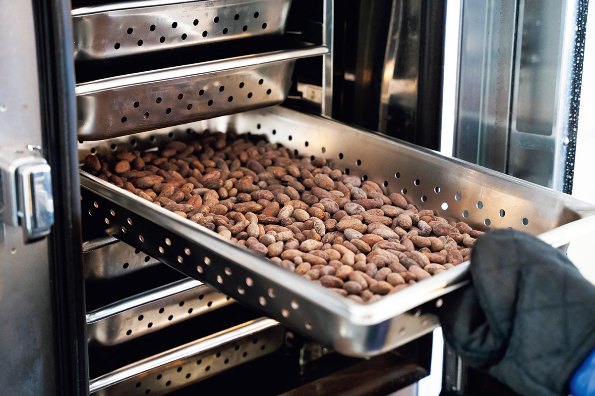
В шоколаде только два ингредиента, какао и чёрный сахар. Основатель называет его шоколадом вычитания: раз ничего лишнего нет, через сахар можно по-настоящему выразить вкус.
Сахар
«Лекарство жизни»
«Когда я угостил чёрным сахаром друзей за границей, они удивились: что это за десерт? В странах, где сахар не едят просто так, чёрный сахар пока никому не известен, и в этом я вижу возможность. Однажды я угощал гостей только что сваренным сахаром, и одна женщина расплакалась. Она сказала на окинавском диалекте: откуда ты, человек с большой земли, знаешь этот вкус? Для меня настоящий чёрный сахар именно такой. Для окинавцев это „нутигусуй“, лекарство жизни, обязательно расскажи о нём людям. Это был чистый чёрный сахар, который мы сварили вместе с мастером. Мы хотим передать окинавскую культуру чёрного сахара будущим поколениям через шоколад и рассказать о ней всему миру»
основатель TIMELESS CHOCOLATE
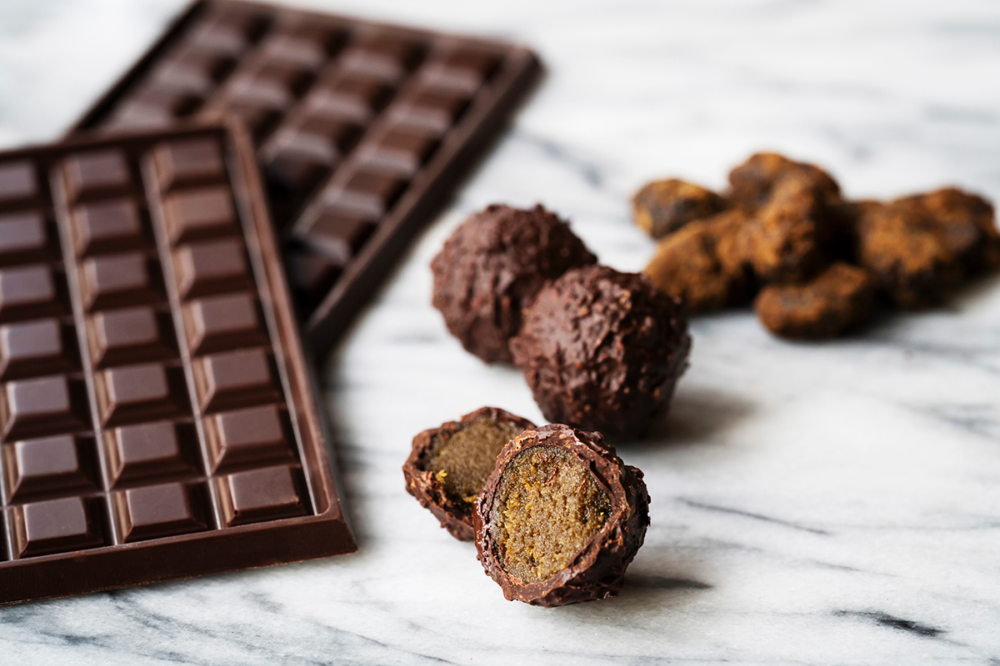
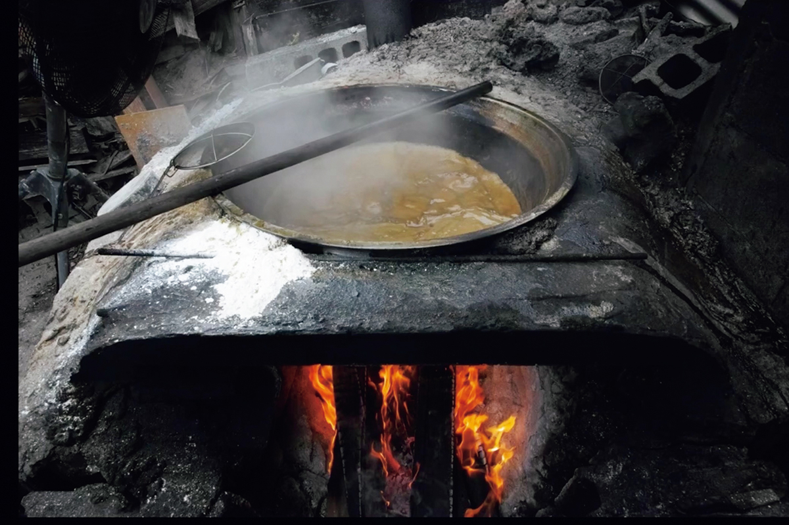
Продукция
Премия губернатора Окинавы
В 2020 году TIMELESS CHOCOLATE получила премию губернатора префектуры Окинава.
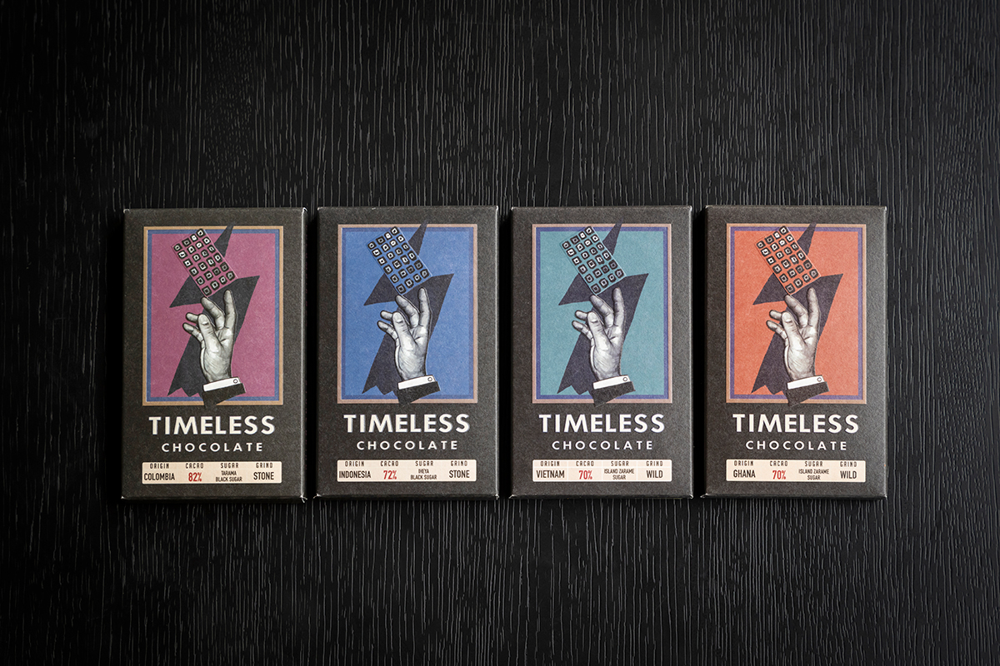
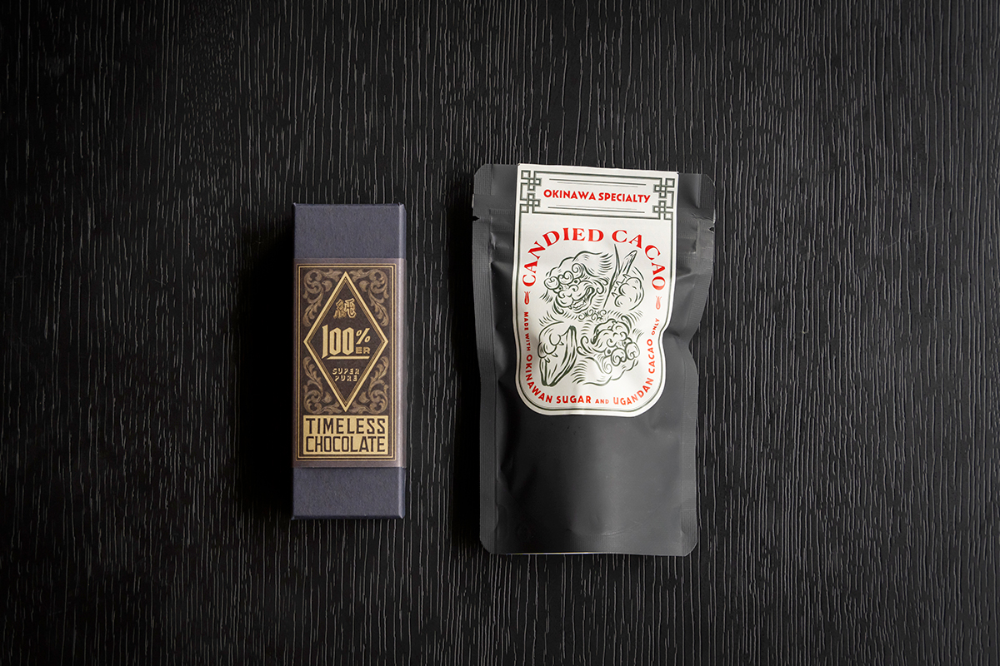
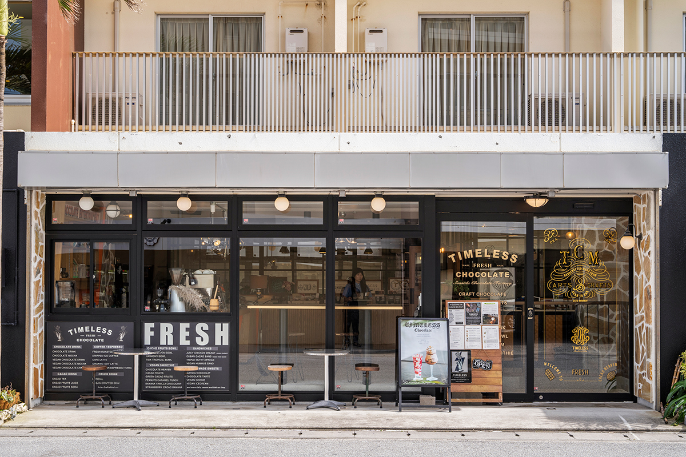
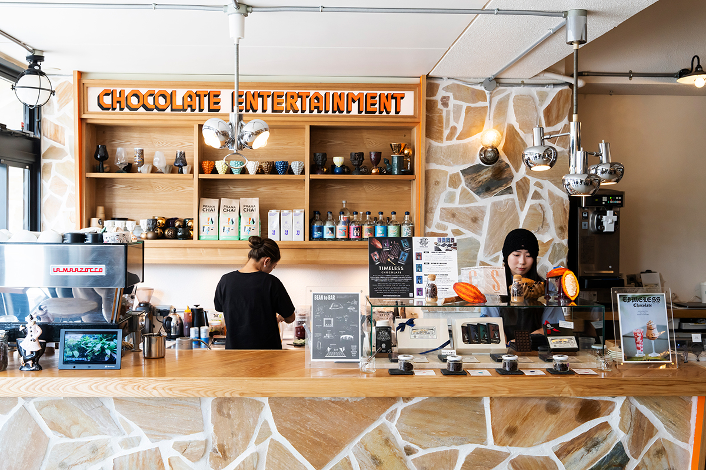
TIMELESS CHOCOLATE
- Адрес
- префектура Окинава, уезд Накагами, Тятан, Мияги, 3-223
- Телефон
- +81 98-923-2880
- Часы работы
- 9:00–18:00
- Выходные
- без выходных
Фото: Wataru Oshiro.